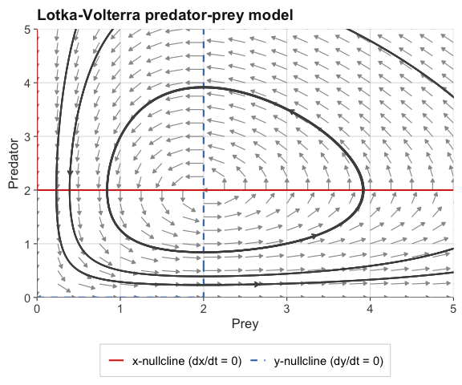
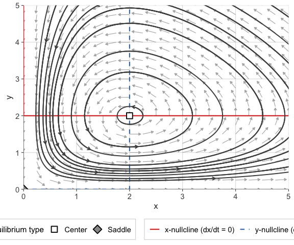
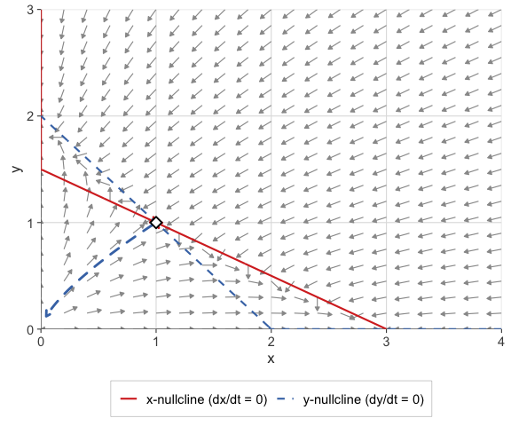

ggphasr provides tools for qualitative analysis of one- and two-dimensional autonomous ordinary differential equation (ODE) systems using phase plane methods. All visualizations are produced with ggplot2 and its extensions, making every plot fully customizable with standard ggplot2 syntax.
ggphasr is a modern successor to the phaseR package (Grayling, 2014), where base R graphics are replaced with ggplot2.
Installation
Install the development version from GitHub:
# install.packages("remotes")
remotes::install_github("jmgraham30/ggphasr")Quick start
ggphasr functions compose naturally with the + operator, just like ggplot2 itself. A complete phase portrait is built layer by layer:
library(ggphasr)
library(ggplot2)
lv_params <- c(alpha = 1, beta = 0.5, delta = 0.5, gamma = 1)
gg_flow_field(
ode_lotka_volterra,
xlim = c(0, 5),
ylim = c(0, 5),
parameters = lv_params,
xlab = "Prey",
ylab = "Predator",
title = "Lotka-Volterra predator-prey model"
) +
gg_nullclines(
ode_lotka_volterra,
xlim = c(0, 5),
ylim = c(0, 5),
parameters = lv_params,
legend_position = "bottom"
) +
gg_trajectory(
ode_lotka_volterra,
y0 = matrix(c(0.5, 0.5,
1.0, 3.0,
3.5, 0.5,
3.0, 3.5),
ncol = 2, byrow = TRUE),
xlim = c(0, 5),
ylim = c(0, 5),
parameters = lv_params,
t_end = 25,
color = "grey30",
add_start_point = FALSE
)
For quick exploration, gg_phase_plane() produces a complete analysis — flow field, nullclines, trajectories, and classified equilibria — in a single call:
result <- gg_phase_plane(
ode_lotka_volterra,
xlim = c(0, 5),
ylim = c(0, 5),
parameters = lv_params,
legend_position = "bottom"
)
result$plot
result$equilibria[, c("x", "y", "classification")]
#> x y classification
#> 1 0 0 Saddle
#> 2 2 2 CenterODE conventions
ggphasr accepts ODE functions in two calling conventions.
Convention A — deSolve-compatible (recommended for compatibility with deSolve::ode()):
Convention B — simplified, for quick exploration:
my_ode <- function(x, y, parameters = NULL) {
c(dx, dy)
}The convention is detected automatically from the function’s argument names. All built-in ODE systems use Convention A.
Function overview
Plotting functions
| Function | Returns | Description |
|---|---|---|
gg_flow_field() |
ggplot |
Direction/velocity field arrows |
gg_nullclines() |
layer list | Zero-isocline curves |
gg_trajectory() |
layer list | Numerically integrated trajectories |
gg_phase_portrait() |
layer list | 1D phase line with stability markers |
gg_time_series() |
ggplot |
Time-series plots of state variables |
gg_manifolds() |
layer list | Stable/unstable manifolds of saddles |
gg_phase_plane() |
ggphasr_result |
All-in-one phase plane wrapper |
Analysis functions
| Function | Returns | Description |
|---|---|---|
find_equilibrium() |
list of vectors | Newton–Raphson equilibrium finding |
classify_equilibrium() |
data frame | Trace-determinant stability classification |
add_layer() |
ggphasr_result |
Add ggplot2 layers to a ggphasr_result
|
Built-in ODE systems
1D models: ode_exponential(), ode_logistic(), ode_monomolecular(), ode_von_bertalanffy()
2D models: ode_lotka_volterra(), ode_sir(), ode_van_der_pol(), ode_simple_pendulum(), ode_competition(), ode_toggle(), ode_morris_lecar(), ode_lindemann()
Textbook examples: ode_example_01() through ode_example_15()
Equilibrium analysis
find_equilibrium() and classify_equilibrium() provide a complete numerical workflow for locating and classifying equilibria:
# Find all equilibria of the competition model by grid search
eq_list <- find_equilibrium(
ode_competition,
y0 = NULL,
xlim = c(0, 12),
ylim = c(0, 12),
parameters = c(r1=1, r2=1, K1=10, K2=10, a12=0.5, a21=0.5)
)
# Classify each equilibrium
do.call(rbind, lapply(eq_list, function(eq) {
classify_equilibrium(ode_competition, equilibrium = eq,
parameters = c(r1=1, r2=1, K1=10, K2=10,
a12=0.5, a21=0.5))
}))[, c("x", "y", "classification", "tr", "det")]
#> x y classification tr det
#> 1 -4.425602e-10 10.000000 Saddle -0.5000002 -0.4999999
#> 2 0.000000e+00 0.000000 Unstable node 1.9999998 0.9999998
#> 3 6.666667e+00 6.666667 Stable node -1.3333335 0.3333335
#> 4 1.000000e+01 0.000000 Saddle -0.5000002 -0.4999999Stable and unstable manifolds
gg_manifolds() traces the stable and unstable manifolds of saddle points, revealing the separatrices that organize the phase plane into basins of attraction:
eq <- find_equilibrium(ode_example_11, y0 = c(0.8, 0.8))
eq_cl <- classify_equilibrium(ode_example_11, equilibrium = eq[[1L]])
gg_flow_field(ode_example_11,
xlim = c(0, 4), ylim = c(0, 3)) +
gg_nullclines(ode_example_11,
xlim = c(0, 4),
ylim = c(0, 3),
legend_position = "bottom") +
gg_manifolds(ode_example_11,
equilibrium = eq[[1L]],
eq_classified = eq_cl,
t_manifold = 5)
#> DLSODA- Warning..Internal T (=R1) and H (=R2) are
#> such that in the machine, T + H = T on the next step
#> (H = step size). Solver will continue anyway.
#> In above message, R1 = -3.96058, R2 = -1.90518e-16
#>
#> DLSODA- Warning..Internal T (=R1) and H (=R2) are
#> such that in the machine, T + H = T on the next step
#> (H = step size). Solver will continue anyway.
#> In above message, R1 = -3.96058, R2 = -1.90518e-16
#>
#> DLSODA- Warning..Internal T (=R1) and H (=R2) are
#> such that in the machine, T + H = T on the next step
#> (H = step size). Solver will continue anyway.
#> In above message, R1 = -3.96058, R2 = -1.90518e-16
#>
#> DLSODA- Warning..Internal T (=R1) and H (=R2) are
#> such that in the machine, T + H = T on the next step
#> (H = step size). Solver will continue anyway.
#> In above message, R1 = -3.96058, R2 = -1.52334e-16
#>
#> DLSODA- Warning..Internal T (=R1) and H (=R2) are
#> such that in the machine, T + H = T on the next step
#> (H = step size). Solver will continue anyway.
#> In above message, R1 = -3.96058, R2 = -1.52334e-16
#>
#> DLSODA- Warning..Internal T (=R1) and H (=R2) are
#> such that in the machine, T + H = T on the next step
#> (H = step size). Solver will continue anyway.
#> In above message, R1 = -3.96058, R2 = -1.26208e-16
#>
#> DLSODA- Warning..Internal T (=R1) and H (=R2) are
#> such that in the machine, T + H = T on the next step
#> (H = step size). Solver will continue anyway.
#> In above message, R1 = -3.96058, R2 = -1.26208e-16
#>
#> DLSODA- Warning..Internal T (=R1) and H (=R2) are
#> such that in the machine, T + H = T on the next step
#> (H = step size). Solver will continue anyway.
#> In above message, R1 = -3.96058, R2 = -1.26208e-16
#>
#> DLSODA- Warning..Internal T (=R1) and H (=R2) are
#> such that in the machine, T + H = T on the next step
#> (H = step size). Solver will continue anyway.
#> In above message, R1 = -3.96058, R2 = -1.00913e-16
#>
#> DLSODA- Warning..Internal T (=R1) and H (=R2) are
#> such that in the machine, T + H = T on the next step
#> (H = step size). Solver will continue anyway.
#> In above message, R1 = -3.96058, R2 = -1.00913e-16
#>
#> DLSODA- Above warning has been issued I1 times.
#> It will not be issued again for this problem.
#> In above message, I1 = 10
#>
#> DINTDY- T (=R1) illegal
#> In above message, R1 = -3.96794
#>
#> T not in interval TCUR - HU (= R1) to TCUR (=R2)
#> In above message, R1 = -3.96058, R2 = -3.96058
#>
#> DINTDY- T (=R1) illegal
#> In above message, R1 = -3.97796
#>
#> T not in interval TCUR - HU (= R1) to TCUR (=R2)
#> In above message, R1 = -3.96058, R2 = -3.96058
#>
#> DLSODA- Trouble in DINTDY. ITASK = I1, TOUT = R1
#> In above message, I1 = 1
#>
#> In above message, R1 = -3.97796
#> 
Vignettes
Three vignettes provide detailed tutorials with full mathematical exposition:
- One-Dimensional ODE Systems — phase lines, equilibria, stability, the logistic and von Bertalanffy growth models
- Two-Dimensional ODE Systems — phase planes, nullclines, trajectories, Lotka-Volterra, SIR, Van der Pol, competition
- Equilibrium Analysis — Jacobian linearization, the trace-determinant plane, manifolds, bifurcation preview
Citation
If you use ggphasr in your teaching or research, please cite it as:
citation("ggphasr")ggphasr builds on the foundations laid by phaseR:
Grayling MJ (2014). phaseR: An R Package for Phase Plane Analysis of Autonomous ODE Systems. The R Journal 6(2): 43–51. https://doi.org/10.32614/RJ-2014-023